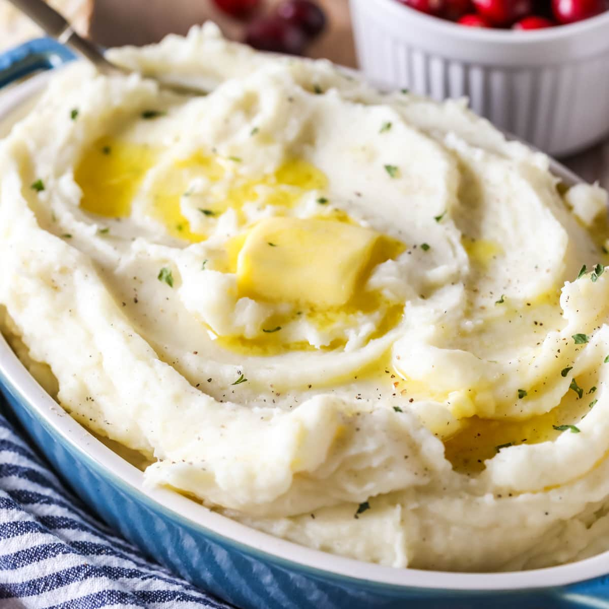

Mashed Potatoes Recipe
Description
Mashed Potatoes is a dish made by mashing boiled or steamed potatoes, usually with added milk, butter, salt and pepper. It is generally served as a side dish to meat or vegetables.
An early recipe is found in Hannah Glasse's The Art of Cookery, published in 1747. Her recipe mashed them in a saucepan with milk, salt, and butter.
- Prep Time: 15 mins
- Cook Time: 20 mins
- Total Time: 35 mins
- Servings: 4
Ingredients
- 2 pounds baking potatoes, peeled and quartered
- 3 cloves garlic, peeled, or to taste (Optional)
- 1 cup milk
- 2 tablespoons butter
- salt and ground black pepper to taste
Steps
- Gather all ingredients.
- Bring a large pot of salted water to a boil. Add potatoes and garlic, lower heat to medium, and simmer until potatoes are tender, 15 to 20 minutes.
- When the potatoes are almost finished, heat milk and butter in a small saucepan over low heat until butter is melted.
- Drain potatoes and return to the pot. Slowly add warm milk mixture, blending it in with a potato masher or electric mixer until potatoes are smooth and creamy.
- Season with salt and pepper. Serve and enjoy!
Recipe Tip
You can use skim, low-fat, or whole milk, or even half-and-half for a richer taste.
Nutrition Facts
- 257 Calories
- 7g Fat
- 44g Carbs
- 6g Protein